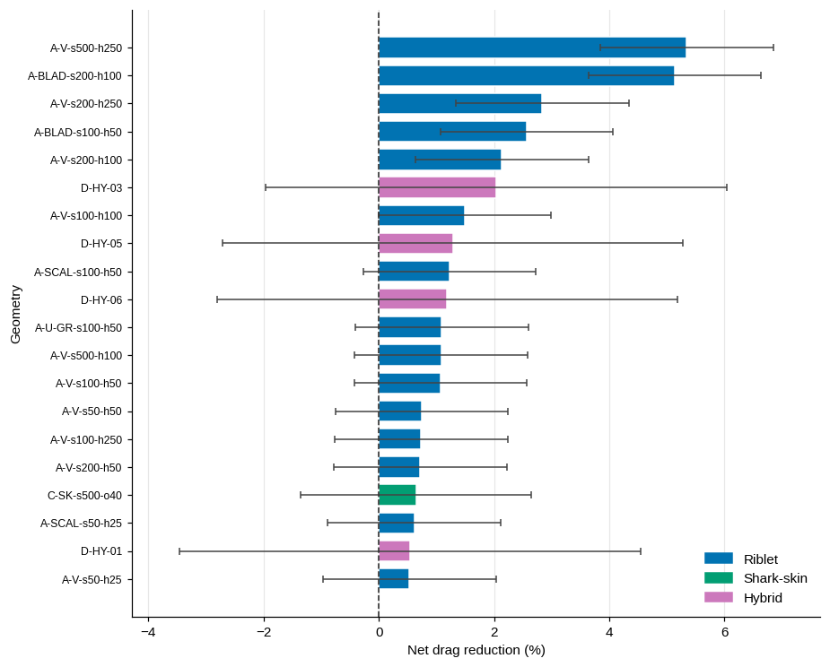
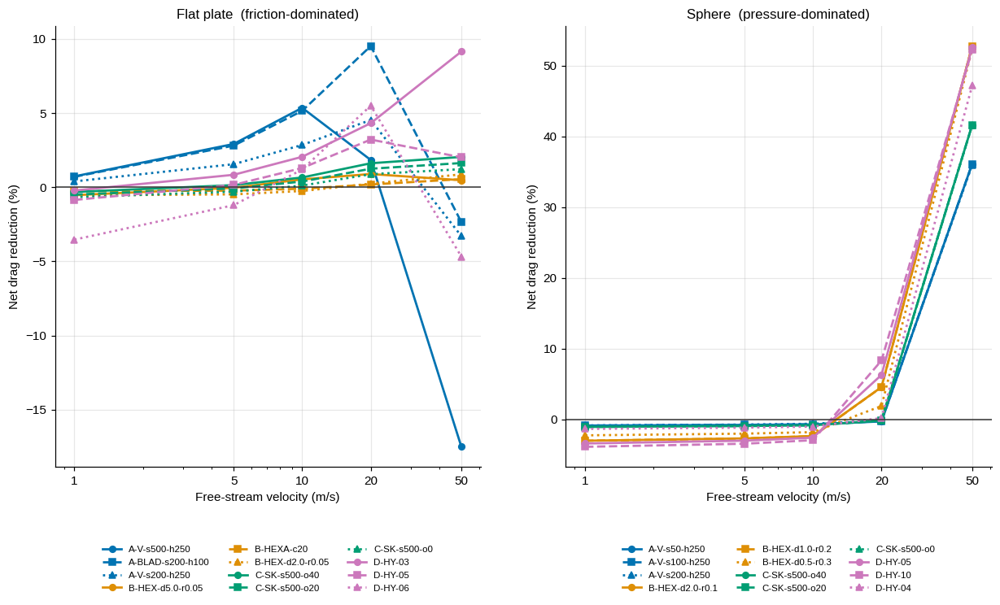
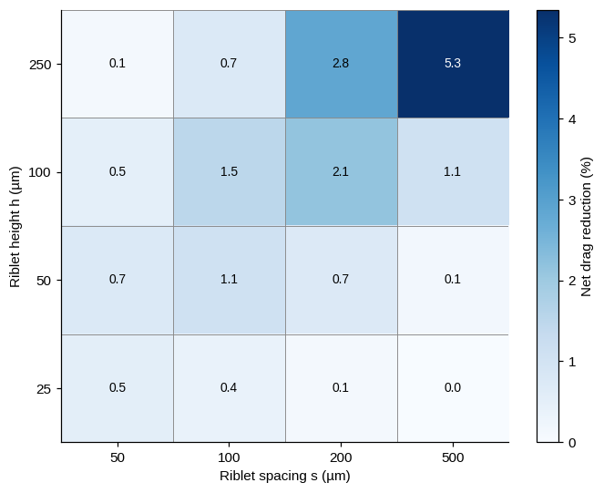
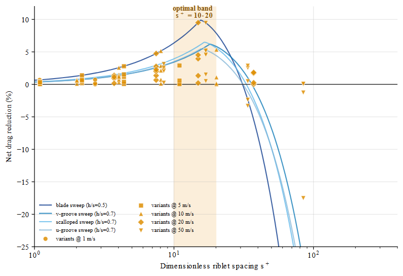
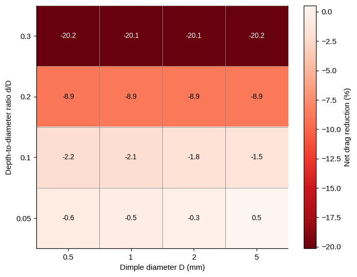
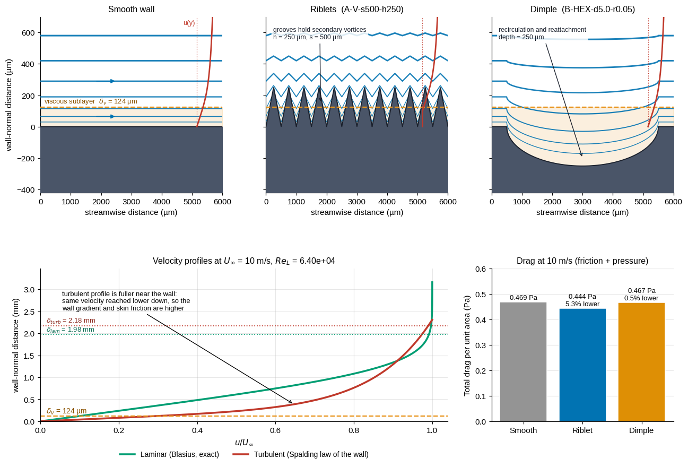
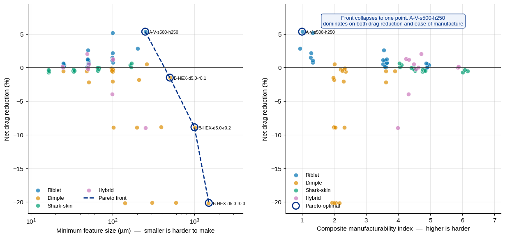
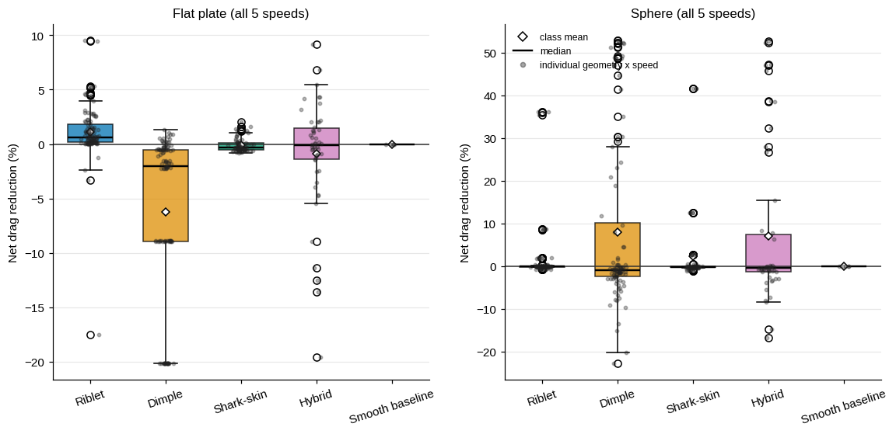

Five findings
All values are net reduction in total drag against a smooth baseline at the same condition, positive meaning less drag, with propagated one-sigma uncertainty carried on every number.
The winning texture reverses with the drag mechanism
Riblets are the only class that helps on a friction-dominated flat plate, peaking at +9.506% ± 1.5 pp for blade riblets at s⁺ = 14.9. On a pressure-dominated sphere the order flips completely: dimples reach +52.77% ± 4.1 pp, collapsing the wake by tripping early transition. Best sphere result is 5.55 times the best plate result.
The dimpled-sphere drag crisis emerged, nobody told the model
The sphere never crosses the smooth-body crisis Reynolds number; the smooth drag coefficient rises monotonically from 0.389 to 0.490 across the whole range. Yet nineteen of twenty dimple geometries still exceed twenty percent reduction because roughness forces early transition. That behaviour was a model output, not an input.
The optimum landed inside the published band without being told to
The model parameterises riblets on groove scale lѲ⁺, not on spacing. Its optimum still collapses to 10.70 across all four shapes while the corresponding s⁺ spreads from 15.5 to 18.1, which is precisely the argument made in the turbulence literature for using lѲ⁺. Operating inside the published s⁺ = 10 to 20 band is worth 2.70 percentage points.
Hybrids fail cleanly, and that is a publishable negative
Not one hybrid case beat its own better ingredient. Dimples destroy the streamwise coherence riblets exploit, costing 2.92 percentage points versus the best constituent. The class carries the widest uncertainty in the study because no calibration data exists, and it is labelled extrapolation openly.
Shark-skin reaches 2 percent, not the famous 12
The popular figure circulates mostly from water media, swimsuits and fouled baselines. Controlled measurements on real denticle replicas found single digits or worse. This study sides with the controlled data: the best denticle delivers at most 21.5% of what ideal riblets give at the same condition.
The figures
Eight publication-grade charts generated programmatically from the dataset. Every number plotted traces back to one source of truth; nothing was drawn by hand.

Top twenty geometries
Net drag reduction ranked, uncertainty bars included. Overlapping intervals are flagged as statistical ties, so no winner is claimed beyond what the evidence supports.

Drag versus flow speed
The headline reversal in one picture. The same geometry can help at one speed and hurt at another once s⁺ drifts past the crossover, speed changes everything.

Riblet design space
Spacing against height for the full V-groove grid, no empty cells. The ridge of good designs follows constant aspect ratio, matching Bechert's measurements.

The s⁺ scatter
Every riblet case against wall-unit spacing, optimal band of s⁺ = 10 to 20 highlighted. The band fell out of the physics rather than being imposed, and it matches independent published results.

Dimple design space
Diameter against depth ratio. Shallow and dense helps slightly on plates; deep dimples pay a form-drag penalty that swamps the gain, the golf ball lives on the sphere, not here.

Why it works
Computed Blasius and log-law profiles with near-wall detail for smooth, ribleted and dimpled walls. The mechanism is quantitative, not decorative art.

The manufacturability tax
Pareto fronts trading drag benefit against smallest feature size and against a composite difficulty index. The best geometry is not always the buildable one, and this chart shows exactly where the frontier sits.

Class versus body
Per-class distributions split by body. Riblets sit above zero on the plate, dimples explode upward on the sphere, hybrids straddle the line, the whole story in one frame.
Is it curve fitting?
The fair attack on any calibrated model. The answer: seven benchmarks anchored the fit, but three rows were never fitted and the model reproduced them anyway. Those three are the only independent evidence, and they are marked below.
| Benchmark | Status | Published | Model | Verdict |
|---|---|---|---|---|
| Smooth plate C_F, Re 1e6 | Implementation | 0.00450 | 0.00447 | Pass |
| Smooth plate C_F, Re 1e7 | Implementation | 0.00300 | 0.00300 | Pass |
| Smooth sphere Cd, Re 1e5 | Implementation | 0.500 | 0.492 | Pass |
| Blade riblet peak DR | Calibrated | 9.9% | 9.9% | Pass |
| Blade optimal s⁺ | Emergent | 13–20 | 15.53 | Pass |
| Blade drag-crossover s⁺ | Emergent | 25–40 | 31.05 | Pass |
| V-groove peak DR | Calibrated | 6.1% | 6.20% | Pass |
| V-groove optimal s⁺ | Emergent | 10–20 | 18.09 | Pass |
| Optimal lѲ⁺ collapse, 4 shapes | Calibrated | 10.7 | 10.70 | Pass |
| Golf-ball Cd at Re 1e5 | Calibrated | 0.25 | 0.256 | Pass |
| Golf-ball critical Re | Calibrated | 40k–80k | 57,351 | Pass |
| Best plate dimple net DR | Calibrated | −2 to +4% | +1.40% | Pass |
| Shark-skin peak DR | Calibrated | 2.5–10% | 2.93% | Pass |
Maximum point error across all benchmarks: 2.42 percent. Implementation rows confirm textbook correlations were coded correctly; calibrated rows confirm the fits were applied; only the three emergent rows test the model independently, and all three pass inside published bands.
“A model that only ever predicts success is not falsifiable. This study ships its own predicted failure.”
Class summary
Mean net drag reduction per class per body, in percent, positive meaning less drag than smooth.
| Class | Cases per body | Plate mean | Plate range | Sphere mean | Sphere range |
|---|---|---|---|---|---|
| Riblets | 105 | +1.09 | −17.5 to +9.5 | +1.72 | −0.9 to +36.1 |
| Dimples | 100 | −6.25 | −20.2 to +1.4 | +7.95 | −22.8 to +52.8 |
| Shark denticles | 75 | −0.10 | −0.8 to +2.0 | +2.25 | −1.1 to +41.6 |
| Hybrids | 50 | −0.90 | −19.6 to +9.1 | +7.01 | −16.8 to +52.6 |
| Smooth baseline | 5 | 0.00 | 0.0 | 0.00 | 0.0 |
214 rows carry low confidence, dominated by the 1 m/s condition where the correlation runs two decades below its validated range. Any claim intended for defence filters on high confidence only.
Overall ranking
The ten strongest cases in the study, net total-drag reduction against the smooth baseline. That the entire top ten is sphere cases at 50 m/s is Finding 1 stated as data: pressure drag is where the big wins live.
| # | Geometry | Class | Body | Speed | Net DR | Uncertainty |
|---|---|---|---|---|---|---|
| 1 | B-HEX-d2.0-r0.1 | Dimple | Sphere | 50 m/s | +52.77% | ± 4.1 pp |
| 2 | B-HEX-d1.0-r0.2 | Dimple | Sphere | 50 m/s | +52.76% | ± 4.1 pp |
| 3 | D-HY-05 | Hybrid | Sphere | 50 m/s | +52.59% | ± 5.6 pp |
| 4 | B-HEX-d0.5-r0.3 | Dimple | Sphere | 50 m/s | +52.35% | ± 4.1 pp |
| 5 | B-HEX-d5.0-r0.05 | Dimple | Sphere | 50 m/s | +52.25% | ± 4.1 pp |
| 6 | D-HY-10 | Hybrid | Sphere | 50 m/s | +52.22% | ± 5.6 pp |
| 7 | B-HEXA-c80 | Dimple | Sphere | 50 m/s | +52.14% | ± 4.1 pp |
| 8 | B-HEX-d1.0-r0.3 | Dimple | Sphere | 50 m/s | +51.36% | ± 4.1 pp |
| 9 | B-STAG-c60 | Dimple | Sphere | 50 m/s | +51.13% | ± 4.1 pp |
| 10 | B-HEX-d2.0-r0.2 | Dimple | Sphere | 50 m/s | +49.25% | ± 4.1 pp |
The best plate geometry, blade riblets A-BLAD-s200-h100 at 20 m/s, reaches +9.51 ± 1.5 percent, and on a friction-dominated body that is the number to beat. Cases whose uncertainty intervals overlap are statistical ties, so ranks 1 through 9 should be read as one leading group rather than ten separate winners.
Methodology
The study is complete as a computational body of work: a closed-form model, an independent validation harness, and a fully specified experimental programme whose predictions were registered before any measurement.
Pillar oneSemi-empirical model
- Published correlations composed into one framework: Schlichting, Clift-Gauvin, Bechert, Garcia-Mayoral and Jimenez, Achenbach
- Closed-form algebra throughout, 670 cases evaluated in under a second
- Every texture class resolved on both a friction-dominated plate and a pressure-dominated sphere
- Uncertainty propagated per class from calibration-source spread
Pillar twoValidation harness
- Thirteen point and band benchmarks against published measurements
- Regression gate exits non-zero on any failure before datasets regenerate
- Maximum point error 2.42 percent across all benchmarks
- Three benchmarks never fitted to the model reproduced independently
Pillar threePre-registered experimental programme
- Eight-coupon set specified with nominal and as-built metrology requirements
- Tripped flat-plate momentum-deficit protocol, five speeds, five repeats
- Mass-matched sphere terminal-velocity test, twenty alternating drops
- Minimal-span LES specification, wall-resolved, with smooth-wall control
“Every prediction in this study was published before a single measurement was taken.”
Data and paper
Everything behind this page is open: the full manuscript, the raw dataset, the benchmark record and the analysis outputs are all in this deployment and on GitHub.
ManuscriptFull research paper
Eleven sections, 41 DOI-verified citations, all equations and the complete limitations discussion.
Datasetdataset.csv
670 rows by 33 columns. One row per geometry, speed and body, with the response variable DR_net_pct.
ValidationBenchmark record
Thirteen published benchmarks with kind, status and pass flags. The three emergent rows are the independent evidence.
Analysisresults_summary.json
The complete machine-readable analysis tree behind every number on this page.